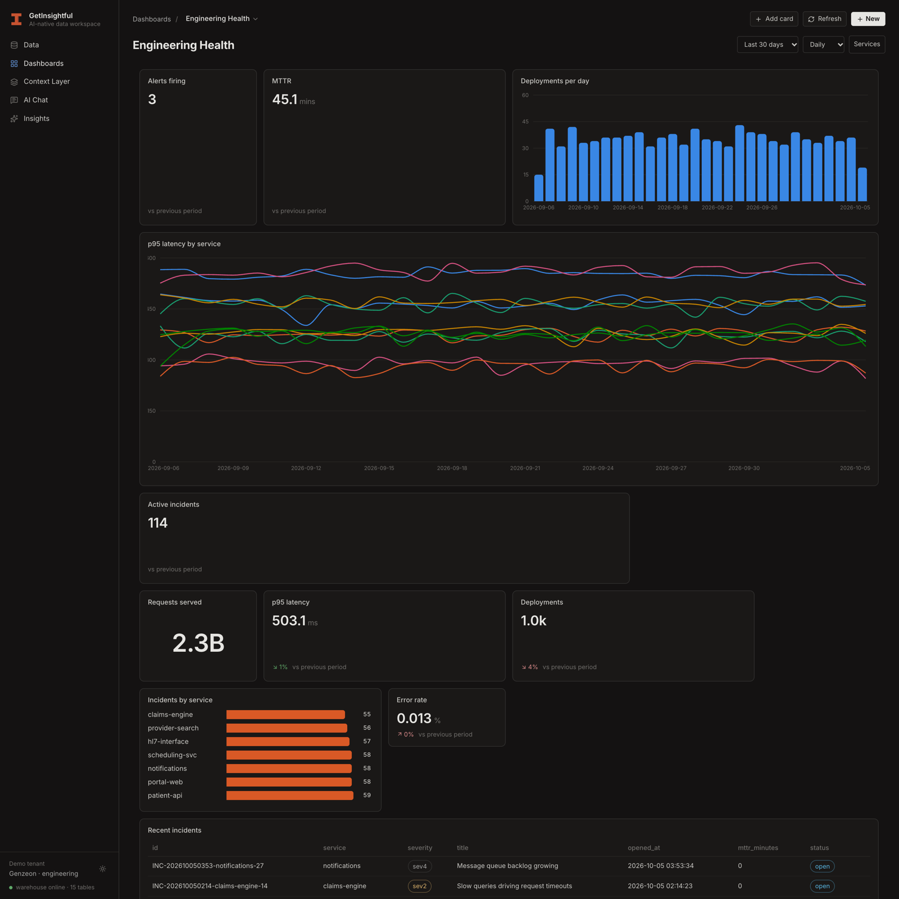
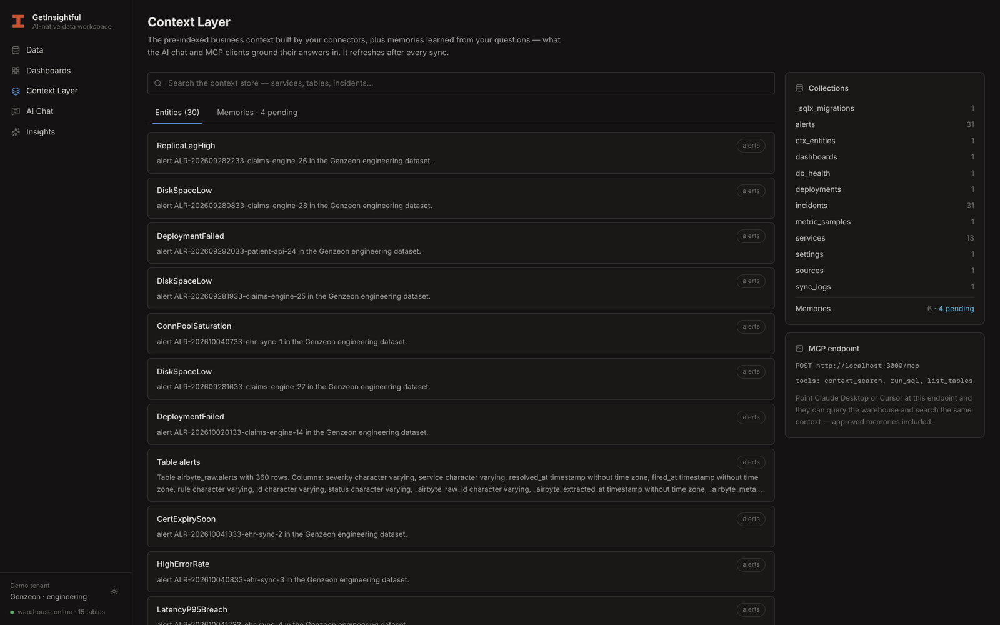
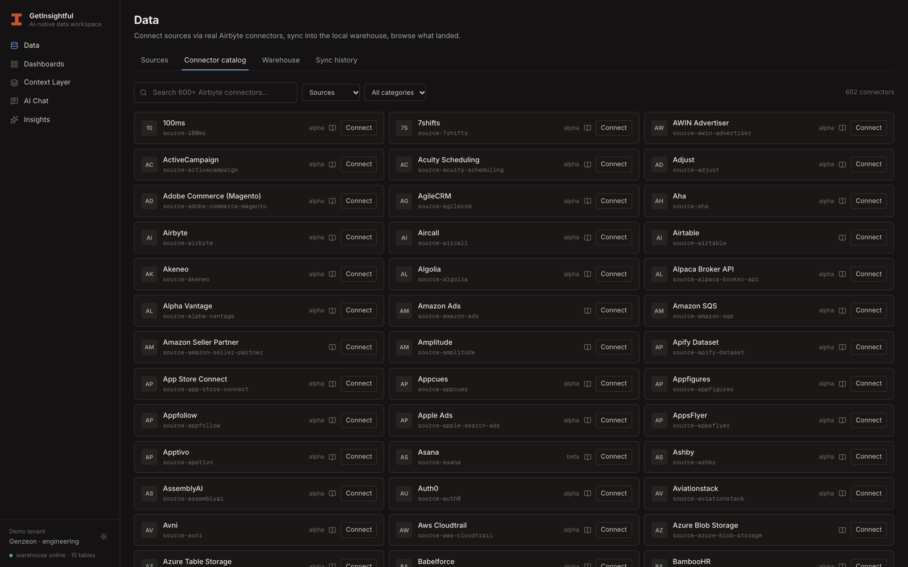
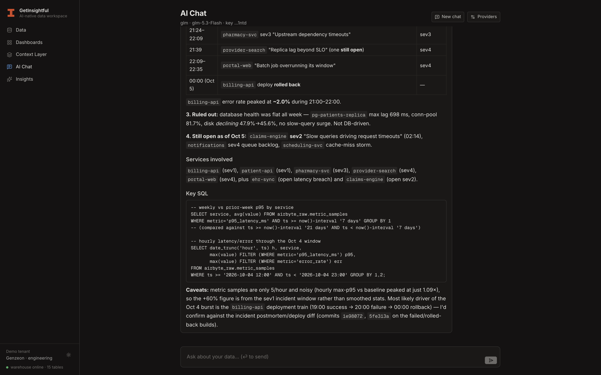
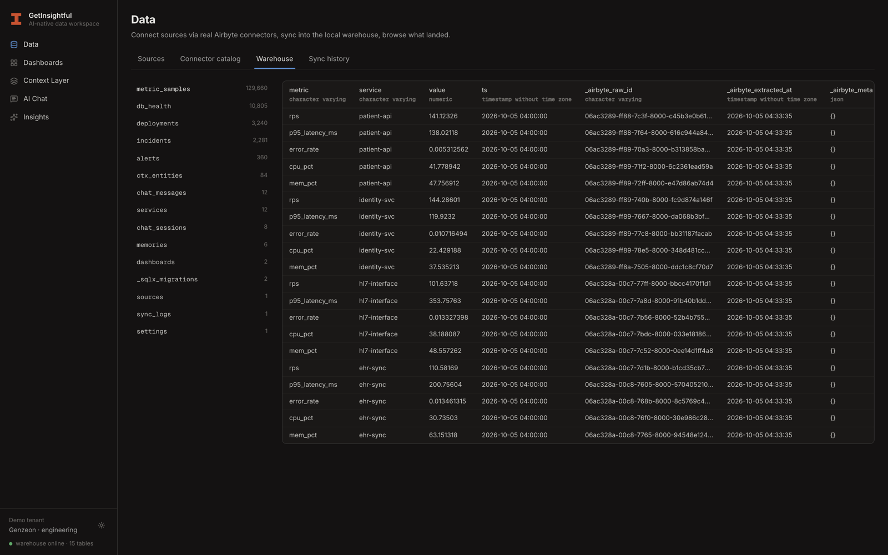

GetInsightful runs real Airbyte connectors into a warehouse you own, indexes everything that lands into a queryable context layer, and turns plain questions into charts, SQL, and answers any agent can use.

602 connectors. Real ones.
Dashboards and chat don't guess. Everything connectors land is parsed into entities — services, incidents, alerts, tables — and every question you ask leaves behind durable memories. Hybrid full-text and trigram search across all of it, refreshed after every sync.

No simulated pipelines, no sample-data theater. GetInsightful executes the real Airbyte connector against your source and lands typed tables in a warehouse you control.

The full Airbyte OSS catalog — 602 connectors with credential forms generated from each connector's spec. Postgres to Stripe to Kafka.

Streaming AI chat that plans, runs read-only SQL against the warehouse, shows every tool call, and answers in plain language.

An MCP endpoint serves the same context and tools to Claude Desktop, Cursor, or your own agents. Nothing lives only in the UI.
Point GetInsightful at a source. It runs the actual Airbyte connector — real extraction, real loads — into your local Postgres warehouse.
Everything that lands is parsed into entities and indexed for hybrid search. Memories from every conversation join the store after you approve them.
Drag-and-drop dashboards, AI chat with receipts, and an MCP endpoint. Humans, apps, and agents read from the same brain.
Every GetInsightful instance exposes an MCP server. Point Claude Desktop, Cursor, or any MCP client at it and your agents query the warehouse and search the same context your team does — approved memories included.
context_search — hybrid search over entities and memoriesrun_sql — read-only SELECTs against the warehouselist_tables — schema discovery for planningThe warehouse is a Postgres you own — one docker compose up. Nothing leaves your machine except the prompts you route to the model provider you configure. Bring your own key: Anthropic, or any Anthropic-protocol endpoint including Z.ai GLM.
POST :3000/mcp with context_search, run_sql (read-only), and list_tables. Claude Desktop and Cursor work out of the box; there's also a REST API and an agent guide for authoring dashboards programmatically../run.sh.One script from clone to context. Your sources, your warehouse, your model — and answers that finally know the difference between what happened and what it meant.